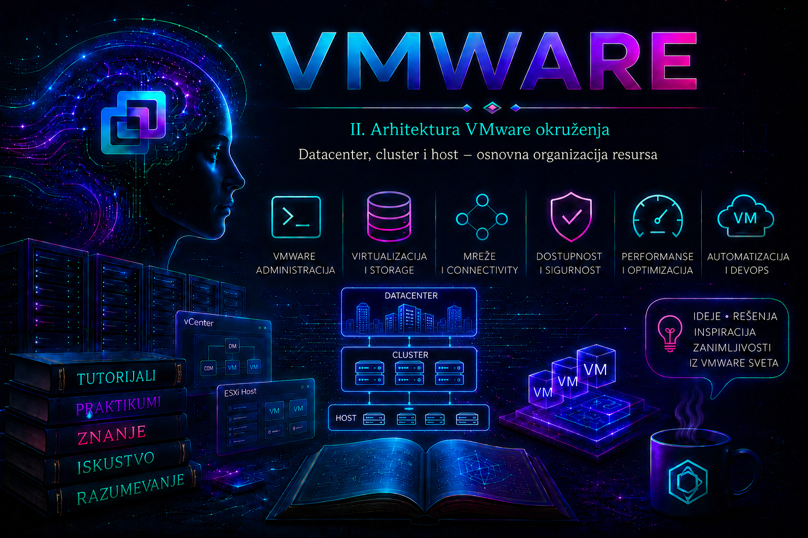

VMware

Posle upoznavanja sa ESXi hostom, vCenter Server-om i vSphere Client-om, sledeći korak je razumevanje načina na koji se ti elementi organizuju u upravljivu celinu. Jedan samostalni ESXi host može se administrirati neposredno, ali se enterprise infrastruktura ne projektuje kao nepovezan skup servera. vCenter Server zato vodi inventar objekata u hijerarhiji u kojoj Datacenter predstavlja administrativni i inventarski kontejner, Cluster udružuje računarske resurse i pravila grupe hostova, a ESXi Host predstavlja konkretan fizički server na kojem se izvršavaju virtuelne mašine.
Ova hijerarhija nije samo način da se objekti lepše prikažu u interfejsu. Mesto objekta određuje nasleđivanje dozvola, opseg pojedinih politika, dostupnost mreža i datastore-a, način obračuna kapaciteta i granice u kojima funkcije kao što su vSphere High Availability (HA), Distributed Resource Scheduler (DRS), Enhanced vMotion Compatibility (EVC) i vSphere Lifecycle Manager mogu da rade. Pogrešno projektovana hijerarhija zato kasnije postaje operativni problem: otežava održavanje, povećava mogućnost neovlašćenog pristupa i može prikriti činjenicu da klaster nema stvarnu redundansu.
Inventarsko stablo i odnosi između objekata
vCenter inventar treba posmatrati kao skup povezanih prikaza, a ne kao doslovan prikaz fizičkog ožičenja. Pojednostavljena hijerarhija compute objekata izgleda ovako:
vCenter Server
└── Datacenter
├── host and cluster folder
│ ├── Cluster
│ │ ├── ESXi Host 01
│ │ ├── ESXi Host 02
│ │ └── Resource Pool
│ └── samostalni ESXi Host
├── VM and template folder
│ ├── Virtual Machine
│ └── VM Template
├── datastore folder
│ ├── Datastore
│ └── Datastore Cluster
└── network folder
├── standardna port grupa
└── vSphere Distributed Switch / distributed port grupaPrikaz Hosts and Clusters stavlja naglasak na compute hijerarhiju, dok prikazi VMs and Templates, Storage i Networking prikazuju iste ili povezane resurse iz drugog ugla. Virtuelna mašina se izvršava na hostu i koristi datastore i mrežu, ali datastore i network objekti zbog toga nisu obična „deca” tog hosta. Ovakvo razlikovanje je važno pri dodeli dozvola, automatizaciji i tumačenju rezultata PowerCLI komandi.
| Objekat | Šta predstavlja | Tipičan opseg odluke | Važna napomena |
|---|---|---|---|
| vCenter Server | Kontrolnu i upravljačku ravan inventara | Identiteti, dozvole, događaji, globalne postavke i upravljanje objektima | Gubitak vCenter-a ne gasi automatski VM-ove koji već rade na ESXi hostovima, ali prekida ili ograničava centralne operacije. |
| Datacenter | Najviši inventarski kontejner za hostove, VM-ove, mreže i storage objekte | Lokacija, administrativna granica, imenovanje i nasleđivanje dozvola | Nije isto što i fizička zgrada, mada ga organizacija često mapira na lokaciju. |
| Cluster | Grupu ESXi hostova koja se upravlja kao skup compute resursa | HA, DRS, EVC, lifecycle, admission control i cluster pravila | Samo članstvo hosta u klasteru ne garantuje dostupnost; funkcije moraju biti podržane, licencirane, pravilno konfigurisane i proverene. |
| ESXi Host | Fizički server i hipervizor | CPU, memorija, fizički NIC/HBA uređaji, VMkernel servisi i lokalno stanje | Host može biti samostalan ili član jednog klastera u datom trenutku. |
| Folder | Logički kontejner određene vrste inventarskih objekata | Preglednost, delegiranje dozvola i automatizacija | Folder nije samo kozmetički element kada se na njemu primenjuju dozvole sa propagacijom. |
| Resource Pool | Logičku podelu CPU i memorijskih resursa hosta ili klastera | Shares, reservations i limits | Nije folder i ne treba ga koristiti samo za grupisanje VM-ova; detaljno se obrađuje u narednoj lekciji. |
Datacenter kao administrativna i sigurnosna granica
Datacenter je obavezan kontejner ispod vCenter Server-a u kojem se organizuju compute, storage i network objekti. Naziv može odgovarati fizičkoj lokaciji, ali može predstavljati i jasno odvojeno produkciono, laboratorijsko ili disaster recovery okruženje. Pri izboru modela važniji su operativna odgovornost, mrežna i storage povezanost, granice delegiranja i način oporavka nego sama geografija.
DC-BG-PROD
├── CL-BG-MGMT-01
├── CL-BG-COMPUTE-01
└── CL-BG-DATABASE-01
DC-NS-DR
└── CL-NS-RECOVERY-01
DC-LAB
└── CL-LAB-01Više datacenter objekata u istom vCenter-u ima smisla kada lokacije imaju odvojene operativne timove, mrežne domene ili skupove storage resursa. Nasuprot tome, pravljenje posebnog datacenter-a za svaku aplikaciju obično nepotrebno usložnjava inventar i migracije. Granice treba projektovati unapred, jer premeštanje hosta, klastera ili VM-a kasnije može uticati na dozvole, alarme, tagove, DRS pravila, backup poslove, monitoring i automatizaciju koja objekte pronalazi po putanji ili imenu.
Dozvole se u vSphere inventaru mogu nasleđivati od roditeljskog objekta. Zbog toga administrator pre promene strukture mora da proveri ko dobija pristup novoj lokaciji i da li je uključena propagacija. Folderi omogućavaju finije delegiranje, ali duboka i neujednačena stabla otežavaju audit. Naziv foldera „Produkcija” sam po sebi ne sprovodi izolaciju: stvarnu kontrolu čine uloge sa minimalnim privilegijama, pravilno mesto dodele dozvole i redovna provera efektivnog pristupa.
Cluster kao domen zajedničkog upravljanja resursima
Cluster objedinjuje kapacitete više ESXi hostova i postaje opseg za politike raspoređivanja, dostupnosti i kompatibilnosti. Hostovi ne moraju biti potpuno identičnog modela, ali produkcioni klaster treba da bude dovoljno homogen da se VM može bezbedno izvršavati na svakom dozvoljenom hostu. To podrazumeva kompatibilne procesore, podržane ESXi verzije i firmware, dosledne mrežne oznake, dostupne datastore resurse, usklačeno vreme i DNS, odgovarajuće licence i konfiguraciju koja je potvrđena testom, a ne samo pretpostavljena.
Najvažnije funkcije povezane sa klasterom imaju različite uloge:
- vSphere HA prati dostupnost hostova i, kada su ispunjeni uslovi, ponovo pokreće pogođene VM-ove na preživelim hostovima. HA nije zamena za backup, replikaciju, guest clustering ili zaštitu od kvara aplikacije.
- vSphere DRS procenjuje raspodelu CPU i memorijskih resursa i daje ili automatski izvršava preporuke migracije, u zavisnosti od verzije, licence i režima automatizacije.
- vMotion premešta aktivno izvršavanje VM-a između kompatibilnih hostova. Za standardni compute-only vMotion datastore mora biti dostupan odredišnom hostu; cross-host Storage vMotion može istovremeno promeniti i compute i storage, pa zajednički datastore nije apsolutan uslov, ali potrebne licence, mreža, propusni opseg i kompatibilnost ostaju obavezni.
- EVC uspostavlja zajednički CPU baseline kako bi ublažio razlike između generacija procesora istog proizvođača. EVC ne čini Intel i AMD hostove međusobno kompatibilnim i ne zamenjuje proveru Hardware Compatibility List-e.
- vSphere Lifecycle Manager pomaže da se hostovi održavaju prema željenoj slici ili baseline-u, u zavisnosti od verzije i modela upravljanja.
- vSphere Cluster Services (vCLS) obezbeđuje dostupnost cluster servisa u podržanim vSphere izdanjima. Sistemske vCLS VM-ove i njihove foldere ne treba ručno premeštati, menjati ili brisati osim po zvaničnom postupku za konkretnu verziju.
Dostupnost se mora projektovati na osnovu failure domain-a. Tri hosta priključena na isti switch, isti storage kontroler i isti izvor napajanja jesu tri compute čvora, ali nisu tri nezavisna domena otkaza. HA admission control rezerviše ili proverava kapacitet za kvarove prema izabranoj politici; njegovo isključivanje da bi se „oslobodio” kapacitet može dozvoliti veće trenutno opterećenje, ali smanjuje dokazivu sposobnost oporavka.
ESXi host: fizička granica izvršavanja
ESXi host poseduje stvarne CPU jezgre, memoriju, fizičke mrežne adaptere, HBA uređaje i lokalne kontrolere. Na njemu rade VMkernel, host management agenti i virtuelne mašine. vCenter upravlja hostom, ali ne pretvara različit hardver u neograničeno zamenljive resurse. Zato se pre prijema hosta u klaster proveravaju najmanje: podržan hardver i firmware, ESXi build, CPU vendor i EVC mogućnost, management/vMotion/storage mreže, MTU duž cele putanje, NTP i DNS, pristup svim potrebnim datastore-ima, licence, host certificate i eventualne zavisnosti od passthrough, SR-IOV, vGPU ili drugih specijalizovanih uređaja.
Host koji se dodaje u produkcioni klaster treba prvo staviti u Maintenance Mode i isprazniti od radnih VM-ova. Maintenance Mode nije gašenje: host ostaje dostupan za administraciju, ali na njemu ne treba pokretati obične workload-e. Način evakuacije zavisi od storage-a, DRS-a, vSAN-a i drugih servisa, pa se opcija ne bira mehanički. Pre izlaska iz Maintenance Mode-a administrator potvrđuje compliance, mrežnu i storage vidljivost i health stanje klastera.
Folderi, tagovi i resource pool-ovi nisu ista stvar
Folderi služe za inventarsku organizaciju i mogu biti granice dozvola. Tagovi dodaju metapodatke koji su pogodniji za pretragu, dinamičke politike i automatizaciju, jer jedan objekat može imati više oznaka iz različitih kategorija. Resource pool deli CPU i memorijske resurse putem rezervacija, ograničenja i relativnih shares vrednosti. Korišćenje resource pool-a samo da bi se dobilo vizuelno stablo aplikacija može nenamerno promeniti prioritet VM-ova kada nastane zagušenje.
Dobra praksa je da folder opisuje stabilnu administrativnu pripadnost, tag poslovni ili tehnički atribut, a resource pool stvarnu politiku resursa. Na primer, folder PROD-Database može biti mesto delegiranja dozvola, tagovi Backup-Tier-Gold i Owner-Finance mogu pokretati politike, dok resource pool postoji samo ako baza zaista zahteva dokumentovanu rezervaciju ili relativni prioritet.
Storage i mreža kroz granice klastera
Za uspešan compute vMotion odredišni host mora videti datoteke VM-a, a mreža VM-a mora postojati i imati odgovarajuću konektivnost na odredištu. Kod vSphere Standard Switch-a iste port grupe moraju biti dosledno napravljene na svakom hostu; jednako ime nije dokaz da su VLAN ID, teaming, MTU i fizički uplink zaista isti. vSphere Distributed Switch centralizuje mnoge postavke, ali uvodi potrebu za pažljivim backup-om konfiguracije i bezbednim postupkom pri dodavanju uplink-a i VMkernel adaptera.
Zajednički datastore olakšava HA i compute-only vMotion, ali „vidljiv” datastore nije nužno zdrav i podjednako dostupan svim hostovima. Administrator proverava broj i stanje putanja, multipathing politiku, kapacitet, latenciju, APD/PDL događaje i dosledan pristup LUN-u ili NFS export-u. Kod vSAN-a storage je deo klaster dizajna i maintenance/recovery odluke imaju drugačije posledice; zato se postupci za klasičan SAN/NFS ne prenose automatski na vSAN.
Projektovanje imena, granica i kapaciteta
Imena treba da budu kratka, stabilna, jednoznačna i pogodna za automatizaciju. Korisno je kodirati lokaciju, namenu i redni broj, ali izbegavati podatke koji se često menjaju, kao što su trenutni vlasnik ili tačan broj hostova. Imena hostova treba da budu usklađena sa forward i reverse DNS zapisima i sertifikatima. Promena imena objekta može prekinuti skripte, monitoring ili backup selekcije koje se oslanjaju na tekstualno ime.
| Odluka | Dobit | Rizik pogrešne primene | Dokaz ispravnosti |
|---|---|---|---|
| Odvojiti PROD i LAB u različite datacenter objekte | Jasnija delegacija i inventar | Teže migracije i više administrativnih granica bez stvarne potrebe | Dokumentovana matrica odgovornosti i dozvola |
| Uključiti EVC pre masovnog smeštanja VM-ova | Predvidljiv CPU baseline za vMotion | Prenizak baseline uskraćuje novije CPU instrukcije; pogrešan trenutak može zahtevati gašenje VM-ova | EVC kompatibilnost svih hostova i test migracija reprezentativnog VM-a |
| Koristiti shared storage | Jednostavniji HA i compute vMotion | Zajednička tačka otkaza bez redundantnih kontrolera, fabric-a i putanja | Vidljivost sa svih hostova, multipath health, test gubitka jedne putanje |
| Uključiti HA admission control | Merljiv rezervni kapacitet za kvar | Prestroga politika blokira uključivanje VM-ova; preblaga ne obezbeđuje oporavak | Cluster Capacity/HA stanje i dokumentovan N+1 ili drugi cilj |
| Delegirati pristup na folderu | Jednostavnije upravljanje većim brojem objekata | Preširoko nasleđivanje privilegija | Test nalogom najmanjih privilegija i periodični permission audit |
Read-only pregled pomoću ESXi Shell-a i PowerCLI-ja
Sledeće ESXi komande čitaju stanje jednog hosta. Izvršavaju se lokalno u ESXi Shell-u ili preko SSH-a nalogom koji ima administratorska prava. SSH treba uključiti samo kada je odobren, vremenski ograničiti i ponovo isključiti posle dijagnostike; za redovni inventar prednost imaju vSphere Client, API ili PowerCLI.
# READ-ONLY: verzija i build ESXi hosta
esxcli system version get
# READ-ONLY: identitet hosta
esxcli system hostname get
# READ-ONLY: fizički NIC uređaji i link stanje
esxcli network nic list
# READ-ONLY: VMkernel adapteri i mrežni stekovi
esxcli network ip interface list
# READ-ONLY: montirani datastore-i
esxcli storage filesystem list
# READ-ONLY: storage uređaji i putanje
esxcli storage core device list
esxcli storage core path list
# READ-ONLY: registrovane virtuelne mašine na ovom hostu
vim-cmd vmsvc/getallvmsPowerCLI pruža pogled kroz vCenter inventar. Komande se izvršavaju sa administrativne radne stanice na kojoj je instaliran aktuelni podržani PowerCLI modul. Koristi se imenovani nalog sa potrebnim read-only privilegijama; poverljivi podaci se ne upisuju u skriptu. Primeri ispod ne menjaju stanje osim uspostavljanja i zatvaranja sesije.
# Uspostavljanje sesije; interaktivno unesite akreditive
Connect-VIServer -Server 'vcsa.lab.local'
# READ-ONLY: inventarska mapa datacenter - cluster - host
Get-Datacenter | Sort-Object Name | ForEach-Object {
$dc = $_
Get-Cluster -Location $dc | Sort-Object Name | ForEach-Object {
$cluster = $_
Get-VMHost -Location $cluster | Sort-Object Name |
Select-Object @{N='Datacenter';E={$dc.Name}},
@{N='Cluster';E={$cluster.Name}},
Name, ConnectionState, PowerState, Version, Build
}
}
# READ-ONLY: osnovna cluster konfiguracija
Get-Cluster | Select-Object Name, HAEnabled, DrsEnabled,
DrsAutomationLevel, EVCMode
# READ-ONLY: datastore-i dostupni svakom hostu
Get-VMHost | ForEach-Object {
$hostObject = $_
Get-Datastore -RelatedObject $hostObject |
Select-Object @{N='VMHost';E={$hostObject.Name}}, Name, Type,
CapacityGB, FreeSpaceGB
}
# Zatvaranje svih sesija bez dodatnog pitanja
Disconnect-VIServer -Server * -Confirm:$false
Očekuje se da svaki produkcioni host pripada nameravanom klasteru, ima stanje Connected, odgovarajući build i dosledan skup ključnih datastore-a. Prazan rezultat nije automatski dokaz da objekat ne postoji: prvo se proveravaju aktivna vCenter sesija, privilegije naloga, parametar -Server i opseg objekta prosleđen parametru -Location ili -RelatedObject.
Praktikum: projektovanje i validacija inventarske hijerarhije
Cilj i kontekst: napraviti laboratorijsku hijerarhiju za odvojeno produkciono i razvojno okruženje, zatim dokazati da su cluster, host, storage i mrežni preduslovi usklađeni. Vežba se izvodi u izolovanom lab vCenter-u; kreiranje i premeštanje inventarskih objekata menja stanje i ne treba ga bez change odobrenja izvoditi u produkciji.
Topologija i preduslovi: jedan vCenter Server, najmanje dva nested ili fizička ESXi hosta za CL-LAB-01, ispravan forward/reverse DNS, sinhronizovano vreme, management konektivnost, testna VM, jedna zajednička port grupa i, ako je dostupan, zajednički datastore. Potreban je nalog sa privilegijama za kreiranje datacenter/cluster/folder objekata i dodavanje hosta. Pre rada zabeležiti početno stanje, postojeće dozvole, aktivne alarme i vlasnika laboratorije.
- U vSphere Client-u otvoriti Menu > Hosts and Clusters, izabrati vCenter objekat i kreirati datacenter
DC-LAB. - U
DC-LABkreirati clusterCL-LAB-01. U prvoj iteraciji HA i DRS ostaviti isključene dok se ne potvrde svi preduslovi; njihovo uključivanje nije uslov da objekat bude cluster. - U prikazu VMs and Templates kreirati foldere
LAB-SharediLAB-Applications. Ne praviti resource pool samo radi ovog grupisanja. - Na svakom hostu proveriti DNS ime, vreme, ESXi verziju/build, fizičke NIC-ove, VMkernel adaptere i datastore-e. Uporediti rezultat, a odstupanja upisati u tabelu validacije.
- Dodati prvi host u
DC-LABili direktno u cluster koristeći FQDN. Pregledati prikazani certificate thumbprint i potvrditi ga tek nakon poređenja sa poznatom vrednošću iz pouzdanog kanala. - Host staviti u Maintenance Mode pre prijema u cluster. Ako na njemu postoje VM-ovi, ne nastavljati dok se ne odredi bezbedna evakuacija ili planirano gašenje.
- Premestiti host u
CL-LAB-01, zatim ponoviti za drugi host. Proveriti Recent Tasks, Events, Summary, Configure i Monitor prikaze. - Uporediti mrežne port grupe, VLAN, MTU i uplink mapiranje. Zatim proveriti da oba hosta vide očekivani datastore i da nema degraded/dead storage putanja.
- Ako procesori pripadaju istom vendor-u, proceniti odgovarajući EVC baseline. Ne spuštati baseline aktivnom klasteru bez procene uticaja: VM koji je pri uključivanju izložio novije CPU instrukcije može zahtevati potpuno gašenje i ponovno uključivanje.
- Tek posle pozitivne validacije uključiti cluster funkcije koje su deo lab scenarija i dostupne u licenci. Za HA proveriti admission control i datastore/heartbeat stanje; za DRS proveriti režim automatizacije.
Validacija uspeha: oba hosta moraju biti Connected, bez neočekivanih alarma, sa usklađenim management/vMotion mrežama i potrebnim datastore pristupom. EVC/HA/DRS stanje mora odgovarati projektu. U Tasks and Events ne sme biti neuspešnih add-host, reconfigure-cluster ili migration zadataka. Ako uslovi dozvoljavaju, izvršiti vMotion testne VM i potvrditi da nema gubitka mrežne dostupnosti niti greške u zadatku.
Praktikum: ista validacija i bezbedan prijem hosta pomoću PowerCLI-ja
Sledeći primer namerno razdvaja read-only proveru od komandi koje menjaju stanje. Promenljive treba prilagoditi laboratoriji. New-Datacenter, New-Cluster, Add-VMHost i Set-VMHost menjaju vCenter/host stanje; ne izvršavaju se nad produkcijom bez proverenog change plana, backup-a relevantne konfiguracije i rollback odluke.
$vCenterName = 'vcsa.lab.local'
$datacenterName = 'DC-LAB'
$clusterName = 'CL-LAB-01'
$esxiName = 'esx01.lab.local'
Connect-VIServer -Server $vCenterName
# READ-ONLY: sprečava slučajno pravljenje duplikata
$datacenter = Get-Datacenter -Name $datacenterName -ErrorAction SilentlyContinue
$cluster = Get-Cluster -Name $clusterName -ErrorAction SilentlyContinue
# STATE-CHANGING, LAB: kreiraj samo objekat koji ne postoji
if (-not $datacenter) {
$datacenter = New-Datacenter -Location (Get-Folder -Name 'Datacenters') `
-Name $datacenterName
}
if (-not $cluster) {
$cluster = New-Cluster -Location $datacenter -Name $clusterName
}
# STATE-CHANGING, LAB:
# Credential se unosi interaktivno; host se prvo dodaje datacenter-u.
$hostCredential = Get-Credential -Message "ESXi nalog za $esxiName"
$vmhost = Get-VMHost -Name $esxiName -ErrorAction SilentlyContinue
if (-not $vmhost) {
$vmhost = Add-VMHost -Name $esxiName -Location $datacenter `
-Credential $hostCredential -Force
}
# STATE-CHANGING: Maintenance Mode pre premeštanja u cluster
Set-VMHost -VMHost $vmhost -State Maintenance -Confirm:$true
Move-VMHost -VMHost $vmhost -Destination $cluster -Confirm:$true
# READ-ONLY: dokaz članstva i osnovnog stanja
Get-VMHost -Location $cluster |
Select-Object Name, ConnectionState, PowerState, Version, Build
Get-Task -Status Error | Select-Object -First 20 Name, State,
StartTime, FinishTime, Description
Disconnect-VIServer -Server $vCenterName -Confirm:$false
Parametar -Force u laboratorijskom primeru može prihvatiti host certificate bez interaktivnog zaustavljanja i zato nije preporučena zamena za upravljanje poverenjem u produkciji. U produkciji se thumbprint ili CA lanac proverava nezavisnim putem, a ponašanje prema nevažećim sertifikatima podešava se prema bezbednosnoj politici. Lozinke se ne čuvaju u plain-text promenljivama niti u istoriji shell-a.
Rollback laboratorije: testne VM-ove ugasiti ili migrirati prema početnom stanju, host staviti u Maintenance Mode, premestiti ga iz klastera u datacenter i tek potom, ako je vežba tako planirana, ukloniti ga iz inventara. Cluster i datacenter brisati samo ako su prazni i ako je potvrđeno da nisu meta backup-a, alarma, dozvola ili automatizacije. Bezbedniji rollback je ostaviti objekte i dokumentovati ih kao trajnu laboratoriju.
Troubleshooting scenario: host ne može da uđe u klaster
Simptom: zadatak Add host ili premeštanje hosta u cluster završava se greškom, host ostaje Disconnected/Not Responding, ili compatibility provera prijavljuje CPU/EVC, mrežni, storage ili lifecycle problem. Posledica: planirani kapacitet i redundansa nisu dostupni; host se ne sme nasilno pustiti u produkciju samo zato što se njime može upravljati direktno.
- Odrediti obim. Proveriti da li problem pogađa jedan host, sve nove hostove, samo jedan cluster ili sam vCenter. Ne menjati EVC, DNS ili firewall dok obim nije poznat.
- Prikupiti dokaze. Zabeležiti tačan tekst greške, task ID, vreme, poslednje promene i stanje Maintenance Mode-a. Pregledati vCenter Tasks and Events, cluster compatibility i host summary.
- Proveriti identitet i management putanju. Sa administrativne stanice i VCSA proveriti forward/reverse DNS, TCP dostupnost potrebnih servisa i vremensku sinhronizaciju. IP adresa umesto FQDN-a može kratkoročno maskirati DNS problem, ali nije trajno rešenje.
- Proveriti verziju i lifecycle. Uporediti ESXi build, image/profile compliance, driver/firmware kombinaciju i Broadcom Compatibility Guide za ciljnu vSphere verziju.
- Proveriti CPU i EVC. Potvrditi isti CPU vendor i da host podržava cluster baseline. Ne snižavati EVC naslepo: aktivne VM-ove može biti potrebno potpuno ugasiti da bi se odrekle već izloženih CPU funkcija.
- Proveriti mrežu i storage. Uporediti VMkernel servise, VLAN, MTU, uplink redundancy, datastore vidljivost i storage putanje. Test običnim ping-om ne potvrđuje jumbo-frame putanju niti vMotion servis.
- Proveriti privilegije i poverenje. Nalog mora imati potrebne privilegije na odredišnom objektu, a host certificate mora biti očekivan. Ne zaobilaziti certificate upozorenje bez nezavisne provere thumbprint-a.
- Postaviti hipotezu i menjati jednu stvar. Primeniti najmanju bezbednu korekciju, ponoviti compatibility proveru, pa tek zatim prijem hosta. Svaku promenu i rezultat dokumentovati.
Za korelaciju se koriste sledeći izvori. Na VCSA-u /var/log/vmware/vpxd/vpxd.log prati vCenter operacije i task ID; na ESXi hostu /var/run/log/hostd.log beleži lokalne management operacije, /var/run/log/vpxa.log komunikaciju vCenter agenta, /var/run/log/vmkernel.log VMkernel, storage i mrežne događaje, a /var/run/log/vobd.log sistemske observacije i alarme. Putanje i način zadržavanja mogu se razlikovati po verziji i konfigurisanom syslog-u, pa se za incident preporučuje centralni syslog i usklađeno vreme.
# READ-ONLY, ESXi Shell: filtriranje poslednjih relevantnih poruka
grep -Ei 'error|fail|disconnect|certificate|EVC|CPU' /var/run/log/hostd.log | tail -n 100
grep -Ei 'error|fail|disconnect|vpxa' /var/run/log/vpxa.log | tail -n 100
grep -Ei 'APD|PDL|NMP|path|vmnic|link' /var/run/log/vmkernel.log | tail -n 150
# READ-ONLY: eksplicitni VMkernel ping sa vMotion steka,
# ako je vMotion TCP/IP stack zaista konfigurisan
vmkping ++netstack=vmotion -d -s 1472 IP_ADRESA_ODREDISNOG_VMOTION_ADAPTERA
Veličina paketa u vmkping testu mora odgovarati projektovanom MTU-u i zaglavljima; prikazanih 1472 bajta služi za standardni MTU 1500 uz IPv4 ICMP. Za jumbo frame validaciju koristi se veličina usklađena sa okruženjem i testira se cela putanja. Neuspeh može značiti pogrešan VLAN, MTU, routing/netstack ili fizičku mrežu, pa rezultat treba povezati sa konfiguracijom oba kraja i switch portova.
Privremeno zaobilazno rešenje može biti ostavljanje hosta van klastera i bez produkcionih VM-ova dok se uzrok ne ukloni. Trajna korektivna mera zavisi od potvrđenog uzroka: ispravka DNS/NTP-a, podržan firmware/driver image, pravilno projektovan EVC baseline, ispravka VLAN/MTU-a, obnova storage putanje ili korekcija privilegija i sertifikata. Kriterijum oporavka nije samo uspešan add-host zadatak, već i čist compliance, zdravi cluster servisi, vidljivost mreža/datastore-a i uspešan kontrolisani vMotion test kada je primenljiv.
Najčešće greške i njihove stvarne posledice
- Datacenter se poistovećuje sa zgradom. Posledica je struktura koja prati geografiju i kada operativne i sigurnosne granice zahtevaju drugačiji model.
- Cluster se smatra automatski visoko dostupnim. Bez uključenog i zdravog HA-a, rezervnog kapaciteta i uklonjenih zajedničkih tačaka otkaza članstvo ne garantuje oporavak.
- Hostovi se dodaju bez Maintenance Mode-a i compatibility provere. Time se radne VM izlažu nekontrolisanim migracijama i razlikama u CPU-u, mreži ili storage-u.
- Jednaka imena port grupa smatraju se dokazom jednakosti. Pogrešan VLAN ili uplink može izazvati gubitak mreže odmah posle vMotion-a.
- Lokalni datastore se proglašava nepodržanim za svaku živu migraciju. Tačnije je razlikovati compute-only vMotion, koji zahteva storage dostupan odredištu, od migracije compute-a i storage-a zajedno.
- Resource pool se koristi kao folder. Shares se vrednuju u odnosu na sibling objekte, pa naizgled bezazlena hijerarhija može promeniti raspodelu resursa tokom contention-a.
- Dozvole se dodeljuju visoko u stablu bez pregleda propagacije. Korisnik može dobiti pristup većem broju hostova ili VM-ova nego što je nameravano.
- Isključuje se admission control radi dodatnog kapaciteta. Klaster može raditi normalno do prvog otkaza, a zatim ne imati dovoljno resursa za restart svih zaštićenih VM-ova.
Administratorske prakse
- Voditi dokumentovanu mapu inventara, odgovornosti, dozvola, failure domain-a i zavisnosti od mreže, storage-a, DNS-a, NTP-a, backup-a i monitoringa.
- Koristiti doslednu konvenciju imenovanja i stabilne tag kategorije; automatizaciju ne vezivati isključivo za krhke tekstualne putanje kada je dostupan stabilniji identifikator ili tag.
- Pre prijema hosta zahtevati standardizovanu checklist-u za HCL, firmware/driver, ESXi image, EVC, VMkernel mreže, datastore-e, licence, sertifikate i lifecycle compliance.
- Promene HA, DRS, EVC, admission control-a i lifecycle politike tretirati kao produkcione promene sa procenom rizika, periodom posmatranja i rollback planom.
- Proveravati redundansu testom kontrolisanog otkaza jedne komponente; inventarski broj adaptera ili putanja nije dokaz da failover radi.
- Koristiti naloge najmanjih privilegija, centralnu autentikaciju gde je podržana i redovan audit efektivnih dozvola. ESXi Shell i SSH držati isključenim kada nisu potrebni.
- Pre svake korekcije sačuvati dokaze: vreme incidenta, Tasks/Events, alarme, logove, metrike, poslednje promene i trenutno cluster stanje. Menjati jednu hipotezu odjednom.
- Ne dirati vCLS sistemske VM-ove niti njihove foldere kao obične workload objekte; za probleme koristiti zvaničan postupak odgovarajuće vSphere verzije.
Završna kontrolna tačka
Lekcija je uspešno savladana kada administrator može da:
- nacrta i objasni odvojene compute, VM/template, storage i network prikaze vCenter inventara;
- razlikuje fizičku lokaciju od Datacenter objekta i obrazloži granice datacenter-a i klastera;
- objasni šta HA, DRS, vMotion, EVC, vCLS i Lifecycle Manager rade, a šta ne garantuju;
- razlikuje folder, tag i resource pool i predvidi posledice njihove pogrešne upotrebe;
- proveri verziju, CPU/EVC, VMkernel mrežu, datastore pristup, DNS/NTP, licence i compliance pre dodavanja hosta;
- izvrši read-only inventar pomoću ESXi CLI-ja i PowerCLI-ja i protumači prazan, nepotpun ili neusaglašen rezultat;
- bezbedno primi laboratorijski host u klaster, validira Tasks/Events, alarme i migraciju, a zatim sprovede dokumentovan rollback;
- razdvoji simptom, neposredni uzrok, osnovni uzrok, workaround i trajnu korektivnu meru kada host ne može da se pridruži klasteru.
Zaključak
Datacenter, cluster i ESXi host čine osnovu vCenter inventara, ali njihova vrednost nije u samoj hijerarhiji već u pravilima i dokazima koje administrator vezuje za svaki nivo. Datacenter uspostavlja jasnu administrativnu celinu, cluster određuje zajednički domen dostupnosti, raspoređivanja, kompatibilnosti i lifecycle-a, dok host ostaje fizičko mesto izvršavanja sa sopstvenim ograničenjima i failure domain-ima. Folderi, tagovi, mreže, datastore-i i resource pool-ovi dopunjuju ovaj model, ali svaki od njih rešava drugačiji problem.
Odgovoran administrator zato ne zaključuje da je infrastruktura otporna samo zato što u stablu vidi više hostova. On proverava kompatibilnost, redundantne putanje, rezervni kapacitet, nasleđene dozvole, cluster health, logove i stvarni rezultat kontrolisane migracije ili failover testa. Takvo razumevanje hijerarhije priprema osnovu za narednu lekciju o resource pool-ovima, u kojoj će logička organizacija resursa dobiti i neposredne posledice po raspodelu CPU-a i memorije.